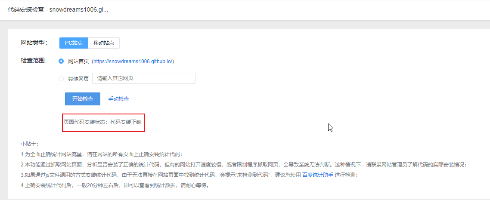
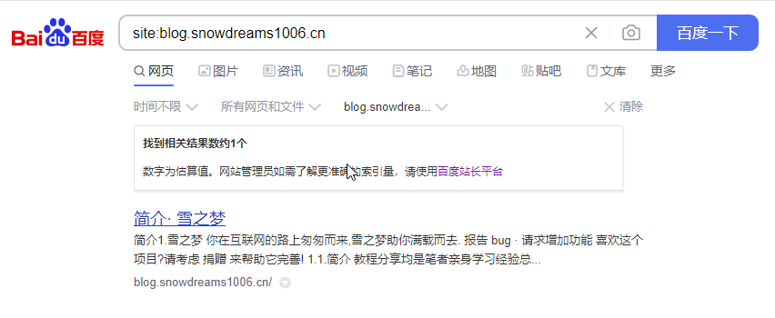

1. 集成百度统计
让人又爱又恨的百度爬虫?这一次我选择了主动投怀送抱!

致读者: 点击上方 “雪之梦技术驿站” → 点击右上角“ ... ”→ 点选“设为星标★ ” 加上星标，就不会找不到我啦！
1.1. 引言
前几天打算将网站提交到百度搜索资源平台供小蜘蛛爬取,本想着一劳永逸提交站点地图sitemap.xml文件,结果发现似乎没有相关权限.
手动提交的方式是可以的,当然也在这里直接提交非验证站点链接
但是手动提交的方式就是会出现验证码,摆正图案验证让我很心烦.
既然能够正常提交网址,那么API提交方式应该也是可以的,刚开始直接推送了全站的链接,提示配额不足.
{"error":400,"message":"over quota"}
手动修改提交链接的数量,再次推送就可以了,说明确实是配额问题,只不过后台一直没有看到具体的配额信息.
{"remain":8,"success":1}
加上之前手动提交推送的链接,所以目前每日总链接配额10个.
普通收录使用说明
1、普通收录工具可以向百度搜索主动推送资源，缩短爬虫发现网站链接的时间，不保证收录和展现效果。
2、API提交和手动提交共享配额，sitemap提交配额不与其他方式共享，具体配额以站点页面显示数据为准 。配额不可累计，当日有效。
3、若链接存在跳转关系，请直接提交跳转后链接。如网站换域名，需提交新域名资源；进行HTTPS改造页面，请提交HTTPS资源。
1.2. 验证
按照上述测试得知,当前每日限额是10个链接,还剩余8条链接,于是再次推送剩余链接,每日推送不用白不用.
$ curl -H 'Content-Type:text/plain' --data-binary @urls.txt "http://data.zz.baidu.com/urls?site=https://blog.snowdreams1006.cn&token=XXXXXX"
% Total % Received % Xferd Average Speed Time Time Time Current
Dload Upload Total Spent Left Speed
100 525 100 24 100 501 124 2605 --:--:-- --:--:-- --:--:-- 2763{"remain":0,"success":8}
但是我怀疑百度和我总有一方是出错的,后台数据统计看不到提交过的痕迹.
直接在浏览器搜索site:blog.snowdreams1006.cn站点结果,只有一条手动推送的记录.
当然也不排除API提交方式还没有立即被收录的可能性,等待一段时间再试试或许会不一样.
1.3. 百度统计平台
经过百度搜索资源平台主动推送网站链接后,想要进一步分析网站来源流量信息,除了直观感受引流效果,更想知道具体的数据效果,那么网站页面中进行埋点统计肯定是不错的选择.
注册并登录百度统计平台就是这么的作用,可以直观感受数据统计的魅力,帮助更好的看到数据效果.
不出意外的是,最忠实的粉丝就是各种爬虫,数据不会说谎只会造假.
在代码设置中获取新版统计代码,然后插入到网站的每个页面中即可.
<script>
var _hmt = _hmt || [];
(function() {
var hm = document.createElement("script");
hm.src = "https://hm.baidu.com/hm.js?XXXXXX";
var s = document.getElementsByTagName("script")[0];
s.parentNode.insertBefore(hm, s);
})();
</script>
确保网站已更新,每个页面都有这么一段百度统计代码:
然后再使用代码安装检查工具进行检测是否安装正常:

针对新网站首次监控也是类似的逻辑,添加网站植入统计代码.

填写好网站基本信息后,即可获取统计代码.

根据不同的网站安装方式不一样,最终的效果如下
网站插入统计代码后,再次检测是否安装成功
当然这是还没来得及更新网站的错误示例,等网站更新成功检测结果应该是这样的.
1.4. 总结
本文主要介绍了如何将自建网站提交给百度搜索引擎,实测下来只有手动提交和api提交两种方式可用,并且每日额度有限.

如果想要进一步分析网站流量情况,可以集成百度统计平台,将统计代码植入到每一个网站页面中,这样就能看到统计数据.
最简单检测网站收录的情况,可以直接搜索site:blog.snowdreams1006.cn看到被各大搜索引擎搜索结果.


1.5. 往期精彩文章
1.6. 欢迎扫码关注

欢迎扫码关注,私信回复『加群』一起交流技术
作者: 雪之梦技术驿站
来源: 雪之梦技术驿站
本文原创发布于「雪之梦技术驿站」,转载请注明出处,谢谢合作!